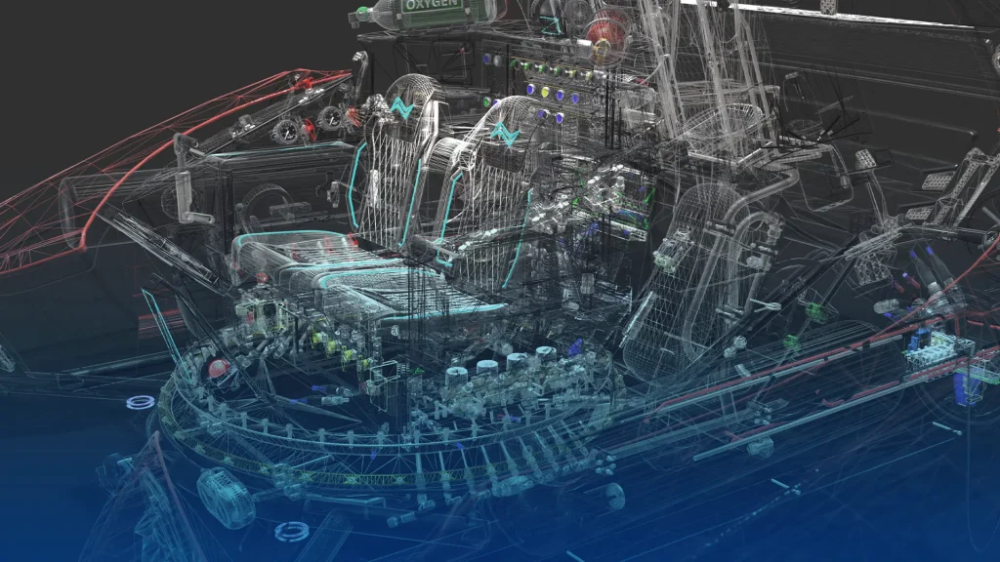

Resumen general
Somos el equipo de Mecánica de Suspensiones CCS, con base en Caracas y respaldo logístico de SUSPENSIONES CCS LLC. Diseñamos, desarrollamos e imprimimos en 3D las piezas y componentes que sostienen las soluciones de ingeniería del departamento: repuestos y partes a medida que no existen comercialmente, kits de adaptación para vehículos 4x4, y el montaje de estaciones móviles Starlink Mini sobre motos de emergencia para apoyar la respuesta rápida ante crisis. Cubrimos cada pieza de principio a fin — diseño CAD, preparación de impresión, producción en la flota FDM/SLA, control de calidad y entrega o montaje final.
Vista consolidada de todas las pestañas del Sheet de inventario.
Filamento consumido por material
Inventario de piezas impresas en 3D
Fuente: pestaña «Inventario de impresiones».
Piezas por tipo de filamento vista fija
Top 10 piezas en stock
Detalle de piezas
Filamento
Disponibilidad agregada («Control de Filamento», actualizada cada 30 min por Apps Script) + rollos individuales («Inventario filamento»).
Consumido (g) por material vista fija
Rollos de filamento
.jpg)
Inventario de ensamblaje
Fuente: pestaña «Inventario Ensamblaje».
Detalle
Historial de impresoras
Fuente: pestaña «Historial Impresoras» (registro automático desde Bambu Cloud).
Gramos consumidos por día vista fija
Registro de trabajos (más reciente primero)
Análisis de Datos — Estudio de Caudal (Túnel de Viento)
Fuente: Sheet aparte «Cálculo de Caudal Con Túnel de Viento», estudio propio del departamento comparando ventiladores y filtros. Se lee en vivo igual que el resto de la página.
Caudal [CFM] por configuración probada
Análisis — columna Caudal [CFM]
Cargando análisis…
Datos completos del estudio
No se incluyen aquí las 2 filas del ventilador "Artic" (no arrojó lectura de caudal en ninguna prueba) ni las notas de metodología de la hoja original — ver el análisis arriba para el detalle.
Guía rápida de nomenclatura de SKU
Referencia estática — fuente: pestaña «Registro De Inventario».
Estructura: [SISTEMA]-[SUBSISTEMA]-[MATERIAL]-[Nº CORRELATIVO] [SUFIJO]
⚠️ Se corrigió el ejemplo y la columna de Material el 2026-08-19: la guía original (pestaña «Registro De Inventario») documentaba los materiales abreviados a 2 letras («TP», «AS»), pero ningún código real del inventario usa esa forma — todos escriben el material completo («TPU», «ASA», «PLA»). Se muestra abajo lo que realmente está en uso, verificado contra los códigos reales de «Inventario de impresiones». También hay un puñado de códigos antiguos que no siguen esta convención (ej. «CA 08-01»), anteriores a que se definiera este esquema — no se muestran aquí por no ser parte de la nomenclatura vigente.
Equipo
Integrantes del Departamento de Mecánica.